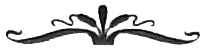

Pat LoBrutto'ya,
DUNE projemizin başından beri verdiğin bitmek bilmez desteğin için...
Coşkun, bilgin ve algılama gücün bu kitapların tek başımıza
yapabileceğimizden çok daha iyi olmasını sağladı.
Sen gerçek bir Rönesans editörüsün